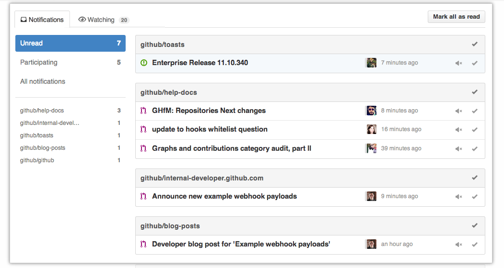
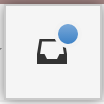
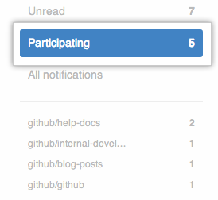
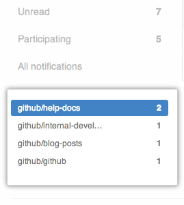
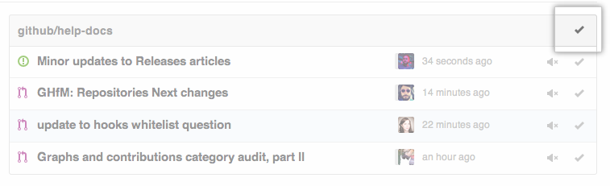
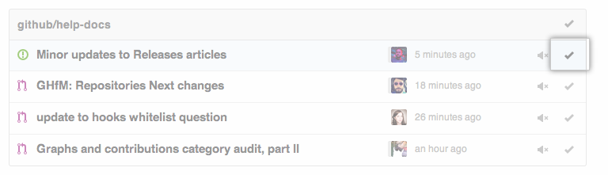
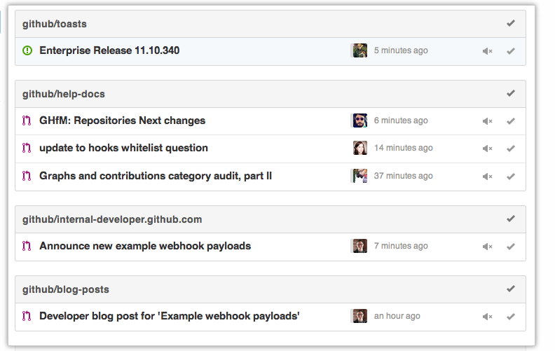
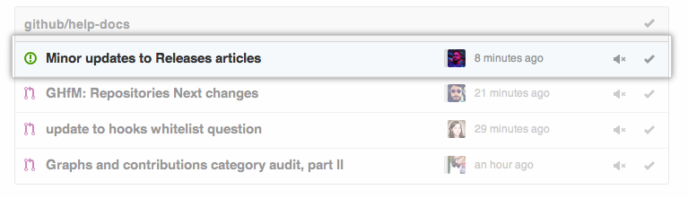
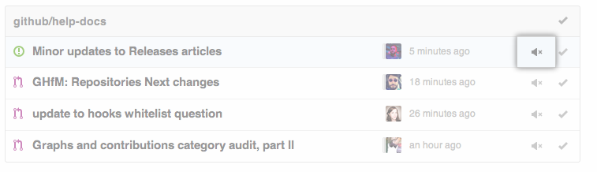

You can manage your notifications across GitHub repositories from any page.
The notifications overview lists every notification you have, regardless of whether you are participating with or watching them.

By default, every unread notification is listed. Here's a few other things you can do on this page.
Viewing your notifications
- In the upper-right corner of any page, click the notifications indicator. 
- In the left sidebar, do one of the following:
- To see all notifications you're participating in, click Participating. 
- To see notifications for a specific repository, click the name of that repository. 
Marking notifications as read
From the notifications page, you can also mark notifications as read without reviewing them. This is helpful if you're watching a repository that you're not actively involved with.
Notifications marked as read do not disappear. If the conversation is updated, the notification is redelivered.
- To mark all notifications in a repository as read, click the name of the repository, and in the upper-right corner, click the check mark. 
- To mark a single notification in a repository as read, click the name of the repository, and next to the issue or pull request, click the check mark. 
Unsubscribe from a notification in a repository
Once you unsubscribe from a conversation, you will no longer receive any notifications about the thread. However, if you or a team you're on are @mentioned, you'll once again start receiving notifications.
- In the upper-right corner of any page, click the notifications indicator.
- In the list of repositories, find the one you want to interact with. 
- In the list of issues and pull requests, find the one you want to unsubscribe from. 
- On the far right, click on the volume mute. 